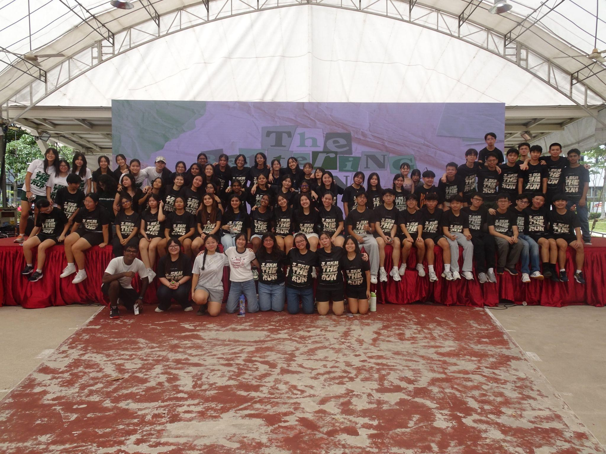
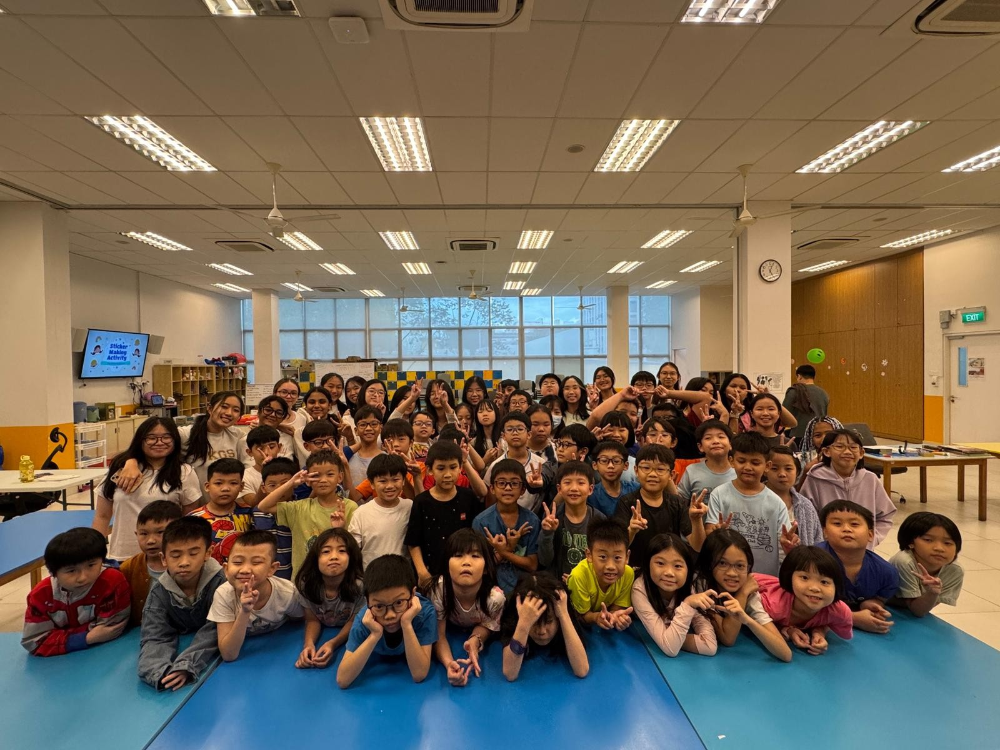
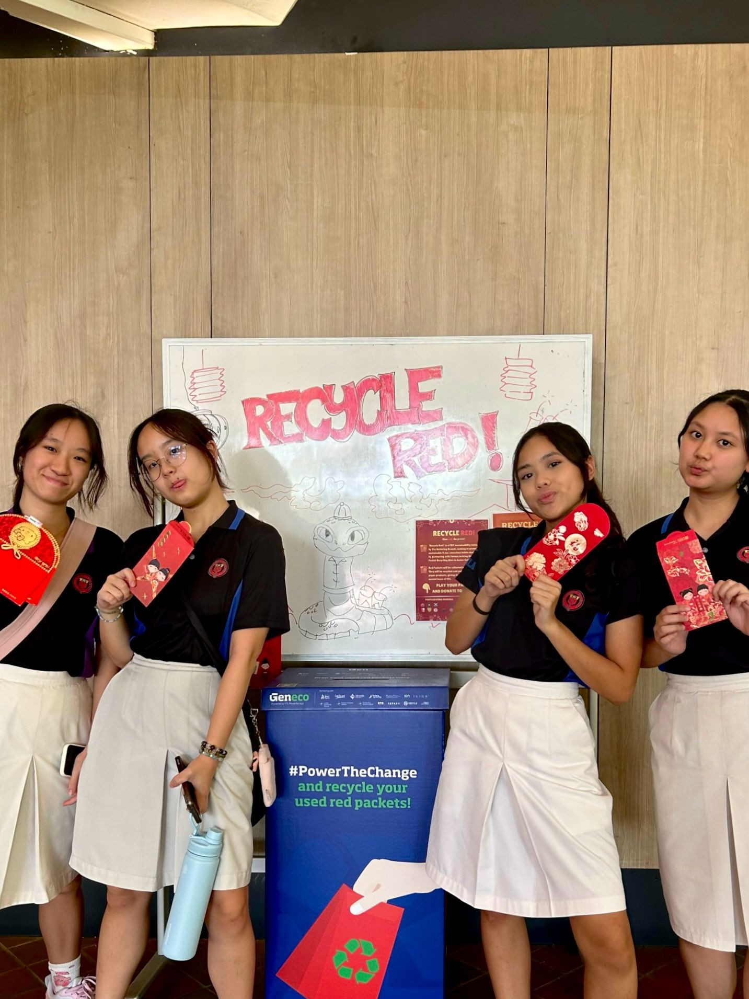
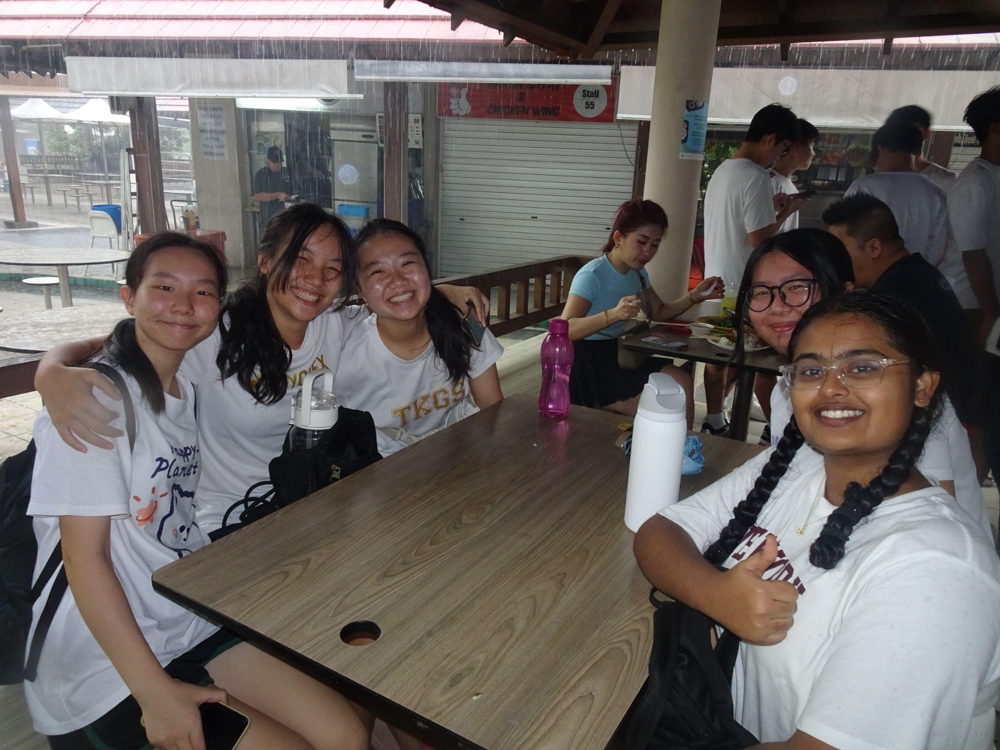
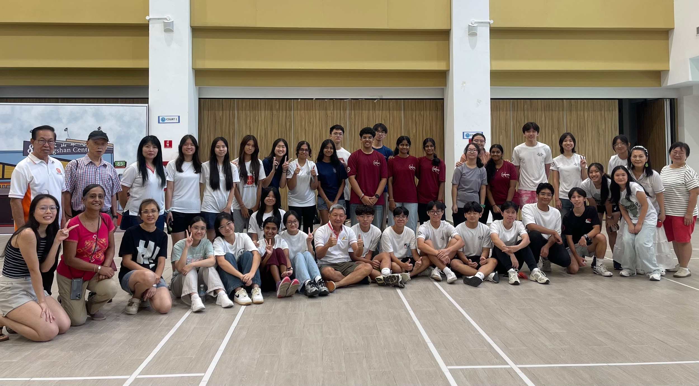

WHO ARE WE
The Bettering Branch is a youth-founded & led volunteering organisation, that hopes to help better Singapore one branch at a time by empowering youths to give back to society.
OUR STORY SO FAR...
As youths in Singapore with hectic schedules, from exams every term and CCA
trainings that end late in the evening, we often felt constrained by our time
& resources to meaningfully support the communities we cared about.
Simulatenously, we observed that many of our peers, despite a willingness
to learn, lacked the opportunities to engage in and truly understand the
depth of pressing issues in our nation. Feeling helpless and unsure of how we
could make a meaningful impact on society as mere students, we decided to build
what we could not find
In January 2024, The Bettering Branch was officially born.
At the end of 2024, we eclipsed our goals, mobilising more than 200 voluntters across our events &
hitting our first thousand followers on Instagram
Since then, we have only grown more and more, surpassing our own expectations and goals.
In 2025, we mobilised more than 400 volunteers across our events, collaborated with 6 other youth organisations/projects
and started our very own initiative Recycle Red!
We look forward to what 2026 brings and to continue branching out for the better






OUR MISSION
- Educate youths on the importance of today’s issues
- Lead & champion change among youths
-
Provide flexible volunteering opportunities
(So YOU can do good without the fear of commitment)